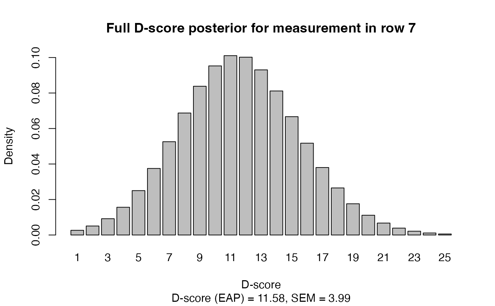

The dscore() function estimates the following quantities: D-score,
a numeric score that quantifies child development by one number,
Development-for-Age Z-score (DAZ) that corrects the D-score for age,
standard error of measurement (SEM) of the D-score.
dscore(
data,
items = names(data),
key = NULL,
population = NULL,
xname = "age",
xunit = c("decimal", "days", "months"),
prepend = NULL,
itembank = NULL,
metric = c("dscore", "logit"),
prior_mean = NULL,
prior_mean_NA = NULL,
prior_sd = NULL,
prior_sd_NA = NULL,
transform = NULL,
qp = NULL,
dec = c(2L, 3L),
relevance = c(-Inf, Inf),
algorithm = c("current", "1.8.7"),
verbose = FALSE
)
dscore_posterior(
data,
items = names(data),
key = NULL,
population = NULL,
xname = "age",
xunit = c("decimal", "days", "months"),
prepend = NULL,
itembank = NULL,
metric = c("dscore", "logit"),
prior_mean = NULL,
prior_mean_NA = NULL,
prior_sd = NULL,
prior_sd_NA = NULL,
transform = NULL,
qp = NULL,
dec = c(2L, 3L),
relevance = c(-Inf, Inf),
algorithm = c("current", "1.8.7"),
verbose = FALSE
)A data.frame with the data.
A row collects all observations made on a child on a set of
milestones administered at a given age. The function calculates
a D-score for each row. Different rows can correspond to different
children or ages.
A character vector containing names of items to be
included into the D-score calculation. Milestone scores are coded
numerically as 1 (pass) and 0 (fail). By default,
D-score calculation is done on all items found in the data
that have a difficulty parameter under the specified key.
String. They key identifies 1) the difficulty estimates
pertaining to a particular Rasch model, and 2) the prior mean and standard
deviation of the prior distribution for calculating the D-score.
The default key NULL sets key = "gsed2406".
View builtin_keys for an overview of the available keys.
String. The name of the reference population to calculate
DAZ.
Use with(builtin_references, table(key, population)) to see which
built-in references are available for key - population combinations.
If not specified, the function set the default population as
builtin_keys$base_population[key == builtin_keys$key].
A string with the name of the age variable in
data. The default is "age". Do not round age.
A string specifying the unit in which age is measured
(either "decimal", "days" or "months").
The default "decimal" corresponds to decimal age in years.
Character vector with column names in data that will
be prepended to the returned data frame. This is useful for copying
columns from data into the result, e.g., for matching.
A data.frame with at least three columns named
key, item and tau. By default, the function uses
dscore::builtin_itembank. If you specify your own itembank,
then you should also provide the relevant transform and qp arguments.
A string, either "dscore" (default) or
"logit", signalling the metric in which ability is estimated.
daz is not calculated for the logit scale.
NULL (default), a string, a numeric scalar, or
a numeric vector with nrow(data) elements. The default value
NULL will consult the base_population field in builtin_keys,
and use the corresponding median of that reference as prior mean for
the D-score. The string should refer to a column name in data
that contains user-supplied values of the prior mean for each observation.
A numeric scalar will be expanded to all observations. A numeric vector
will be used as is.
NULL (default) or a scalar numeric, representing
the prior mean for observations with missing ages. By default, D-scores
with missing ages will we NA. We suggest setting
prior_mean_NA = 50 as a reasonable choice for samples between 0-3
years. The argument is ignored if prior_mean is specified per
observation, which gives you full control of priors for observations
with missing ages.
NULL (default), a string, a numeric scalar, or
a numeric vector with nrow(data) elements. The default (NULL)
uses a value of 5 for all ages. The string should refer to a column
name in data that contains user-supplied values of the prior sd
for each observation. A numeric scalar will be expanded to all
observations. A numeric vector will be used as is.
NULL (default) or a scalar numeric, representing
the prior sd for observations with missing ages. By default, D-scores
with missing ages will we NA. We suggest setting
prior_sd_NA = 20 as a reasonable choice for samples between 0-3
years. The argument is ignored if prior_sd is specified per
observation, which gives you full control of priors for observations
with missing ages.
Numeric vector, length 2, containing the intercept
and slope of the linear transform from the logit scale into the
the D-score scale. The default (NULL) searches builtin_keys
for intercept and slope values.
Numeric vector of equally spaced quadrature points.
This vector should span the range of all D-score or logit values.
The default (NULL) creates seq(from, to, by) searching the
arguments from builtin_keys.
A vector of two integers specifying the number of
decimals for rounding the D-score and DAZ, respectively.
The default is dec = c(2L, 3L).
A numeric vector of length with the lower and
upper bounds of the relevance interval. The procedure calculates
a dynamic EAP for each item. If the difficulty level (tau) of the
next item is outside the relevance interval around EAP, the procedure
ignore the score on the item. The default is c(-Inf, +Inf) does not
ignore scores.
Computational method, for backward compatibility.
Either "current" (default) or "1.8.7" (deprecated).
Logical. Print settings.
The dscore() function returns a data.frame with nrow(data) rows.
Optionally, the first block of columns can be copied to the
result by using prepend. The second block consists of the
following columns:
| Name | Label |
a | Decimal age (years) |
n | Number of items with valid (0/1) data |
p | Percentage of passed milestones |
d | D-score, mean of posterior distribution |
sem | Standard error of measurement, standard deviation of the posterior |
daz | D-score corrected for age, calculated in Z-scale (for metric "dscore") |
For more detail, the dscore_posterior() function returns a data frame with
nrow(data) rows and length(qp) plus prepended columns with the
full posterior density of the D-score at each quadrature point.
If no valid responses are found, dscore_posterior() returns the
prior density. Versions prior to 1.8.5 returned a matrix (instead of
a data.frame). Code that depends on the result being a matrix may break
and may need adaptation.
The scoring algorithm is based on the method by Bock and Mislevy (1982). The method uses Bayes rule to update a prior ability into a posterior ability.
The item names should correspond to the "gsed" lexicon.
A key is defined by the set of estimated item difficulties.
| Key | Model | Quadrature | Instruments | Direct/Caregiver | Reference |
"dutch" | 75_0 | -10:80 | 1 | direct | Van Buuren, 2014/2020 |
"gcdg" | 565_18 | -10:100 | 13 | direct | Weber, 2019 |
"gsed1912" | 807_17 | -10:100 | 21 | mixed | GSED Team, 2019 |
"293_0" | 293_0 | -10:100 | 2 | mixed | GSED Team, 2022 |
"gsed2212" | 818_6 | -10:100 | 27 | mixed | GSED Team, 2022 |
"gsed2406" | 818_6 | -10:100 | 27 | mixed | GSED Team, 2024 |
As a general rule, one should only compare D-scores
that are calculated using the same key and the same
set of quadrature points. For calculating D-scores on new data,
the advice is to use the default, which currently is "gsed2406".
The default starting prior is a mean calculated from a so-called
"Count model" that describes mean D-score as a function of age. The
The Count models are implemented in the function [get_mu()].
By default, the spread of the starting prior
is 5 D-score points around the mean D-score, which corresponds to
approximately 1.5 to 2 times the normal spread of child of a given age. The
starting prior is informative for very short test (say <5 items), but has
little impact on the posterior for larger tests.
Bock DD, Mislevy RJ (1982). Adaptive EAP Estimation of Ability in a Microcomputer Environment. Applied Psychological Measurement, 6(4), 431-444.
Van Buuren S (2014). Growth charts of human development. Stat Methods Med Res, 23(4), 346-368. https://stefvanbuuren.name/publication/van-buuren-2014-gc/
Weber AM, Rubio-Codina M, Walker SP, van Buuren S, Eekhout I, Grantham-McGregor S, Caridad Araujo M, Chang SM, Fernald LCH, Hamadani JD, Hanlon A, Karam SM, Lozoff B, Ratsifandrihamanana L, Richter L, Black MM (2019). The D-score: a metric for interpreting the early development of infants and toddlers across global settings. BMJ Global Health, BMJ Global Health 4: e001724. https://gh.bmj.com/content/bmjgh/4/6/e001724.full.pdf
# using all defaults and properly formatted data
ds <- dscore(milestones)
head(ds)
#> a n p d sem daz
#> 1 0.4873 11 0.9091 30.76 3.751319 -0.633
#> 2 0.6571 14 0.6429 29.06 2.518082 -2.716
#> 3 1.1800 19 0.9474 53.35 3.414966 -0.006
#> 4 1.9055 13 0.8462 63.88 2.971594 -0.094
#> 5 0.5503 11 0.8182 28.75 3.476988 -1.863
#> 6 0.7666 14 0.7857 34.21 3.088920 -2.377
# step-by-step example
data <- data.frame(
id = c(
"Jane", "Martin", "ID-3", "No. 4", "Five", "6",
NA_character_, as.character(8:10)
),
age = rep(round(21 / 365.25, 4), 10),
ddifmd001 = c(NA, NA, 0, 0, 0, 1, 0, 1, 1, 1),
ddicmm029 = c(NA, NA, NA, 0, 1, 0, 1, 0, 1, 1),
ddigmd053 = c(NA, 0, 0, 1, 0, 0, 1, 1, 0, 1)
)
items <- names(data)[3:5]
# third item is not part of the default key
get_tau(items, verbose = TRUE)
#> key: gsed2406
#> ddifmd001 ddicmm029 ddigmd053
#> 8.61 8.47 NA
# calculate D-score
dscore(data)
#> a n p d sem daz
#> 1 NA 0 NA NA NA NA
#> 2 NA 0 NA NA NA NA
#> 3 0.0575 1 0.0 9.95 4.386250 -1.336
#> 4 0.0575 2 0.0 7.76 3.921677 -1.941
#> 5 0.0575 2 0.5 11.58 3.988388 -0.833
#> 6 0.0575 2 0.5 11.58 3.988388 -0.833
#> 7 0.0575 2 0.5 11.58 3.988388 -0.833
#> 8 0.0575 2 0.5 11.58 3.988388 -0.833
#> 9 0.0575 2 1.0 15.73 4.250471 0.610
#> 10 0.0575 2 1.0 15.73 4.250471 0.610
# prepend id variable to output
dscore(data, prepend = "id")
#> id a n p d sem daz
#> 1 Jane NA 0 NA NA NA NA
#> 2 Martin NA 0 NA NA NA NA
#> 3 ID-3 0.0575 1 0.0 9.95 4.386250 -1.336
#> 4 No. 4 0.0575 2 0.0 7.76 3.921677 -1.941
#> 5 Five 0.0575 2 0.5 11.58 3.988388 -0.833
#> 6 6 0.0575 2 0.5 11.58 3.988388 -0.833
#> 7 <NA> 0.0575 2 0.5 11.58 3.988388 -0.833
#> 8 8 0.0575 2 0.5 11.58 3.988388 -0.833
#> 9 9 0.0575 2 1.0 15.73 4.250471 0.610
#> 10 10 0.0575 2 1.0 15.73 4.250471 0.610
# or prepend all data
# dscore(data, prepend = colnames(data))
# calculate full posterior
p <- dscore_posterior(data)
# check that rows sum to 1
rowSums(p)
#> [1] 0.9999992 0.9999992 1.0000000 1.0000000 1.0000000 1.0000000 1.0000000
#> [8] 1.0000000 1.0000000 1.0000000
# plot full posterior for measurement 7
barplot(as.matrix(p[7, 12:36]),
names = 1:25,
xlab = "D-score", ylab = "Density", col = "grey",
main = "Full D-score posterior for measurement in row 7",
sub = "D-score (EAP) = 11.58, SEM = 3.99")

# plot P10, P50 and P90 of D-score references
g <- expand.grid(age = seq(0.1, 4, 0.1), p = c(0.1, 0.5, 0.9))
d <- zad(z = qnorm(g$p), x = g$age, verbose = TRUE)
#> key: gsed2406
#> population: preliminary_standards
matplot(
x = matrix(g$age, ncol = 3), y = matrix(d, ncol = 3), type = "l",
lty = 1, col = "blue", xlab = "Age (years)", ylab = "D-score",
main = "D-score preliminary standards: P10, P50 and P90")
abline(h = seq(10, 80, 10), v = seq(0, 4, 0.5), col = "gray", lty = 2)
# add measurements made on very preterms, ga < 32 weeks
ds <- dscore(milestones)
points(x = ds$a, y = ds$d, pch = 19, col = "red")